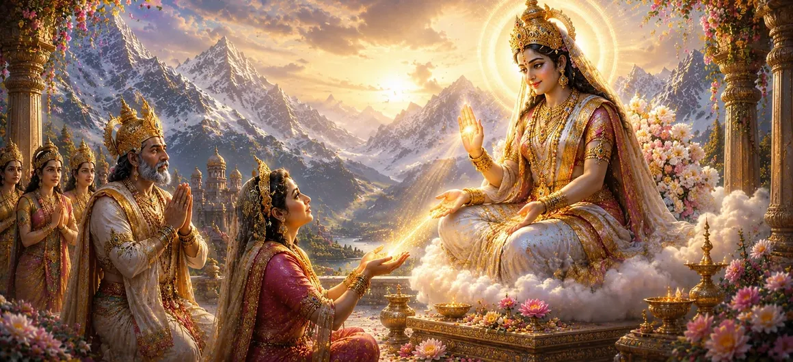

यह अध्याय बताता है कि कैसे दिव्य देवी परेशान देवताओं के सामने प्रकट हुईं और उन्हें आराम, ज्ञान और आश्वासन दिया। भविष्य के बारे में उनकी चिंता और दुनिया के सामने आने वाली चुनौतियों को देखकर, देवी ने खुलासा किया कि सब कुछ एक दिव्य योजना के अनुसार सामने आ रहा था। उसके शब्दों ने देवताओं को नई आशा से भर दिया और सर्वोच्च की इच्छा में उनके विश्वास को मजबूत किया।
देवता अनिश्चितता और सृष्टि के कल्याण की चिंता के बोझ तले दबे हुए थे। हालाँकि उन्होंने भगवान शिव की प्रार्थना की थी, फिर भी वे एक स्पष्ट संकेत की लालसा रखते थे कि दिव्य योजना से सद्भाव और धर्म की बहाली होगी।
उस क्षण, दिव्य देवी एक उज्ज्वल और राजसी रूप में एकत्रित देवताओं के सामने प्रकट हुईं। उसकी उपस्थिति ने स्वर्ग को रोशन कर दिया, भय दूर कर दिया और उसे देखने वाले सभी लोगों के दिलों को शांति और भक्ति से भर दिया।
देवी ने धीरे से देवताओं को संबोधित किया और उन्हें आश्वासन दिया कि निराशा का कोई कारण नहीं है। उन्होंने समझाया कि प्रत्येक घटना, चाहे वह आनंदमय हो या कठिन, एक महान दिव्य उद्देश्य का हिस्सा थी जो अंततः दुनिया को लाभ पहुंचाएगी।
देवी ने भविष्यवाणी की थी कि महान आशीर्वाद का समय निकट आ रहा है। पार्वती के रूप में उनके भावी अवतार और भगवान शिव के साथ उनके मिलन के माध्यम से, दिव्य योजना सामने आएगी और ब्रह्मांडीय नियति की पूर्ति होगी।
देवी दयालुता और अनुग्रह के साथ सच्ची चिंताओं का जवाब देती हैं।
ईश्वरीय योजना में विश्वास भय और अनिश्चितता को दूर करता है।
दैवीय घटनाएँ एक उच्च ब्रह्मांडीय उद्देश्य के अनुसार प्रकट होती हैं।
देवी के वचन सुनने के बाद देवताओं को लगा कि उनका भय दूर हो गया है। उनके मन शांत हो गए, और उन्हें फिर से विश्वास हो गया कि दिव्य ज्ञान हर घटना को एक उचित निष्कर्ष की ओर निर्देशित कर रहा था।
यह अध्याय सिखाता है कि जब भी भय और अनिश्चितता पैदा हो, तो ईश्वर में सच्चा विश्वास शांति और आत्मविश्वास बहाल कर सकता है। देवी सभी साधकों को याद दिलाती हैं कि दैवीय कृपा हमेशा मौजूद रहती है, तब भी जब भविष्य अस्पष्ट लगता है।
देवी न केवल एक दैवीय शक्ति के रूप में बल्कि एक दयालु माँ के रूप में भी बात करती थीं। उसके कोमल शब्दों ने देवताओं के डर को शांत किया और उन्हें याद दिलाया कि सभी प्राणी उसकी प्रेमपूर्ण देखभाल के तहत सुरक्षित हैं।
देवी ने इस बात पर जोर दिया कि प्रत्येक दिव्य घटना उचित समय पर सामने आती है। जो देरी से या अनिश्चित दिखाई देता है वह अक्सर एक बड़े उद्देश्य को पूरा करता है जो तभी स्पष्ट होता है जब नियति अपने नियत समय पर पहुंचती है।
"दिव्य माँ हर उस दिल को सांत्वना देती है जो उसकी बुद्धि पर भरोसा रखता है।"
दिव्य देवी के सांत्वनादायक शब्द प्राप्त करने के बाद, देवताओं को प्रकट होती ब्रह्मांडीय योजना में आशा और विश्वास पुनः प्राप्त हुआ। यह जानने के लिए अगले अध्याय को जारी रखें कि मैना को एक पवित्र वरदान कैसे मिलता है जो देवी पार्वती के भविष्य के भाग्य और शिव और शक्ति की दिव्य कहानी को आकार देगा।